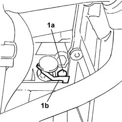
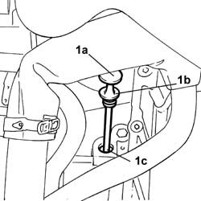

0010T45 AUTOMATIC TRANSMISSION FLUID - Check level and top up if necessary
- Path
- Procedures > 00 MAINTENANCE > 0010 NEW UNITS AND MAINTENANCE > 0010T vehicle oil and fluids > 0010T45 AUTOMATIC TRANSMISSION FLUID - Check level and top up if necessary
- Kind
- repair procedure (removal / refitting; the operation number is the code)
- Applies to
- engines: 2.4 20V, 3.0 V6, 3.2 V6; all production periods
- Interactive page
- https://sloeber94.github.io/elrnDB-lThss/en/#/606288
Applies to: engines: 3.0 V6, 3.2 V6; all production periods
- Position the vehicle on a lift.
- Open the boot, remove the cover on the left hand side and disconnect the negative battery lead.
See in Op. 7040D50 ENGINE COMPARTMENT UPPER SOUND INSULATION SHIELD - R.R.
See in Op. 1048A21 AIR INLET HOSE FROM INTAKE TO FILTER - R.R.
See in Op. 1048A28 vacuum air circuit resonator pipe - r+r
See in Op. 1016A42 LEFT CYLINDER HEAD IGNITION COIL COVER - R.R.
See in Op. 1048A11 COMPLETE AIR FILTER -R.R.
- Raise the vehicle on the lift.
See in Op. 7055B54 PROTECTION/GUARD under engine - R.R.
- Lower the vehicle
1. Undo the bolt (1a) fixing the transmission fluid dipstick retaining plate (1b).

Applies to: engines: 3.0 V6, 3.2 V6; all production periods
1. Remove the transmission fluid dipstick (1a) complete with seal (1b) and use a suitable system to refill the gearbox via the level inspection opening (1c) using the recommended fluid.
 | Description | Qty. | Component | Type | Classification |
|---|---|---|---|---|---|
. | TUTELA GI/A | 7,25 Litri | AUTO TRANSMISSION FLUID | - |

Applies to: engines: 3.0 V6, 3.2 V6; all production periods
- Position the dipstick checking the condition of the seal, then secure the retaining plate tightening the bolt to the recommended torque.
 | Value - daNm | Fastening | Component | Ø |
|---|---|---|---|---|
. | 0,5 | Bolt | AUTO TRANSMISSION FLUID | M6 |
- Raise the vehicle
See in Op. 7055B54 PROTECTION/GUARD under engine - R.R.
- Lower the vehicle
See in Op. 1048A11 COMPLETE AIR FILTER -R.R.
See in Op. 1016A42 LEFT CYLINDER HEAD IGNITION COIL COVER - R.R.
See in Op. 1048A28 vacuum air circuit resonator pipe - r+r
See in Op. 1048A21 AIR INLET HOSE FROM INTAKE TO FILTER - R.R.
See in Op. 7040D50 ENGINE COMPARTMENT UPPER SOUND INSULATION SHIELD - R.R.
- Connect the negative battery terminal.
- Remove the vehicle from the lift.
Applies to: engines: 2.4 20V; all production periods
- Position the vehicle on a lift.
- Open the boot, remove the cover on the left hand side and disconnect the negative battery lead.
See in Op. 7040D50 ENGINE COMPARTMENT UPPER SOUND INSULATION SHIELD - R.R.
See in Op. 1016A40 Ignition COIL COVER on cylinder head - R.R.
See in Op. 1048A21 AIR INLET HOSE FROM INTAKE TO FILTER - R.R.
See in Op. 1048A28 vacuum air circuit resonator pipe - r+r
See in Op. 1048A10 COMPLETE AIR FILTER -R.R.
- Raise the vehicle on the lift.
See in Op. 7055B54 PROTECTION/GUARD under engine - R.R.
- Lower the vehicle.
1. Undo the bolt (1a) fixing the transmission fluid dipstick retaining plate (1b).
Applies to: engines: 2.4 20V; all production periods
1. Remove the transmission fluid dipstick (1a) complete with seal (1b) and use a suitable system to refill the gearbox via the level inspection opening (1c) using the recommended fluid.
| Description | Qty. | Component | Type | Classification |
|---|---|---|---|---|---|
. | TUTELA GI/A | - | CHECKING AUTOMATIC TRANSMISSION FLUID TOP-UP LEVEL | Oil | ATF DEXRON III |
Applies to: engines: 2.4 20V; all production periods
- Position the dipstick checking the condition of the seal, then secure the retaining plate tightening the bolt to the recommended torque.
| Value - daNm | Fastening | Component | Ø |
|---|---|---|---|---|
. | 0,5 | Bolt | AUTO TRANSMISSION FLUID | M6 |
- Raise the vehicle
See in Op. 7055B54 PROTECTION/GUARD under engine - R.R.
- Lower the vehicle
See in Op. 1048A10 COMPLETE AIR FILTER -R.R.
See in Op. 1048A28 vacuum air circuit resonator pipe - r+r
See in Op. 1048A21 AIR INLET HOSE FROM INTAKE TO FILTER - R.R.
See in Op. 1016A40 Ignition COIL COVER on cylinder head - R.R.
See in Op. 7040D50 ENGINE COMPARTMENT UPPER SOUND INSULATION SHIELD - R.R.
- Connect the negative battery terminal.
- Remove the vehicle from the lift.
Topics linked from this page (8)
- 1016A40 Ignition COIL COVER on cylinder head - R.R.
- 1016A42 LEFT CYLINDER HEAD IGNITION COIL COVER - R.R.
- 1048A10 COMPLETE AIR FILTER -R.R.
- 1048A11 COMPLETE AIR FILTER -R.R.
- 1048A21 AIR INLET HOSE FROM INTAKE TO FILTER - R.R.
- 1048A28 vacuum air circuit resonator pipe - r+r
- 7040D50 ENGINE COMPARTMENT UPPER SOUND INSULATION SHIELD - R.R.
- 7055B54 PROTECTION/GUARD under engine - R.R.